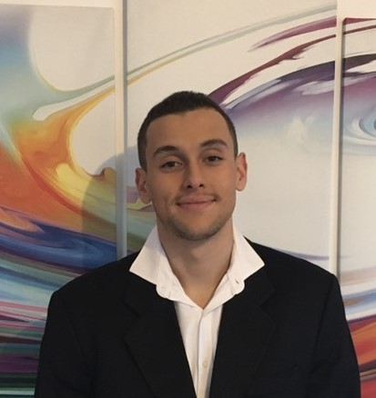

Bonjour je m'appelle Elias
Je suis Elias Banon âgé de 18 ans.
Voici, ci-contre, mon profil codé en HTML et en CSS.
Ecole
Actuellement en BBA à l'Essec, je me suis orienté en école de commerce.
Notamment, je suis particulièrement intéressé par le domaine de la finance
touchant les domaines de l'économie, des mathématiques mais aussi de l'informatique.
De plus, l'Essec possède de nombreuses associations ainsi qu'une vie étudiante active.
C'est alors que j'ai postulé dans l'association Kryptosphere dans laquelle je fais parti, plus précisemment au pôle Marketing.
Finance


Ayant un intérêt pour la finance, j'ai tenté d'en connaître plus sur ce domaine à partir d'ouvrages
comme "L'Investisseur Intelligent" de Benjamin Graham, "Technical Analysis" de John Murphy.
Cet intérêt pour ce domaine m'a poussé à créer un forum de trading sur le web appelé "Trading Forum".
Le but de ce forum est de créer une communauté autour de ce domaine en s'instruisant mutuellement.
De plus, un projet de créer une collection de NFT est toujours en cours.
Sport
Passioné par le sport, j'ai pratiqué des sports collectifs comme le football ou encore le handball.
Les sports collectifs reflètent un bon état d'esprit où tout le monde avance ensemble.
De plus, j'ai pratiqué de sports individuels notamment de combat comme le taekwendo
ou encore des sports dits "extêmes" comme le parkour, le snowboard, le surf, le kitesurf...
Ces sports permettent de dépasser ses propres limites tant physiques que psychologiques
Aventure

Ayant le goût de l'aventure et du challenge,
avec des amis, nous avons pour objectif de créer une chaîne de contenus
basée sur le dépassement de soi ainsi que la recherche de nouveaux horizons, cultures.
Par la suite, les revenus générés par ces activités seront transmis à des associations humanitaires.
Par exemple, nous sommes en train d'organiser une vidéo Paris-Rome à pieds pour 2024.
Astronomie


Un nouveau domaine suscitant mon intérêt est celui de l'astronomie.
En effet, celui-ci est un moyen de s'évader vers d'autres univers, galaxies à partir de magnifiques visuels.
C'est un domaine vaste avec des connaissances abondantes avec des découvertes en tout temps.
Il permet également de se rendre compte à quel point nous sommes si petits sur Terre.